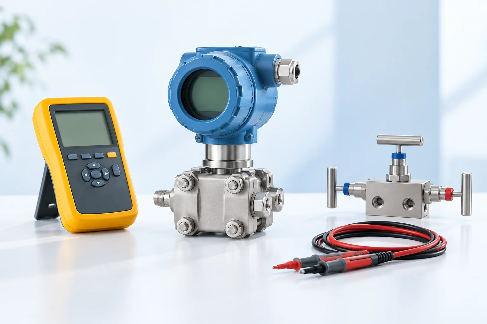

Less calculating.
More engineering.
Fast calculators, commissioning checklists, safety-logic simulators, and field-focused learning for instrumentation engineers and technicians. No sign-up. No payment.

Choose a tool
18 free tools with live curves, level indicators and test-progress views. Change an input and see what happens.
4–20 mA Converter
Convert current, percentage and engineering units.
DP Flow Calculator
Find flow from differential pressure.
5-Point Calibration
Generate rising and falling calibration points.
2oo3 Voting Simulator
Explore how transmitter states create a trip.
Loop Check Checklist
Track field checks and save your progress.
Engineering Unit Converter
Convert pressure and temperature units.
RTD Pt100 Calculator
Convert resistance and temperature for Pt100 sensors.
Thermocouple Converter
Convert thermocouple voltage with reference-junction compensation.
Hydrostatic Level
Relate liquid head, density and differential pressure.
Wet & Dry Leg Level
Work through DP level transmitter range calculations.
Valve Cv / Kv
Estimate liquid-service valve flow coefficients.
PID Loop Simulator
Explore setpoint tracking and process disturbances.
Loop Voltage Budget
Check supply voltage against loop device requirements.
Cable Voltage Drop
Estimate conductor voltage drop for instrument loops.
Ohm’s Law & Power
Calculate voltage, current, resistance and power.
Calibration Error
Compare measured and expected values against span.
FAT / SAT Checklist
Prepare a reusable system acceptance checklist.
Cause & Effect Tests
Organize cause, effect and reset verification.
15+ years across major EPC projects
Satish Kumar Jaiswal is an Instrumentation and Control professional experienced in commissioning, maintenance, DCS, SIS, ESD, F&G, PLC, SCADA, FAT/SAT, loop checking, and plant startup across the GCC and Asia.

Satish Kumar Jaiswal
Commissioning specialist with experience across green hydrogen, refinery, petrochemical, alumina, utilities, and power-generation projects.
Experience, projects and skills →Latest guides
How to perform a 5-point transmitter calibration
A clear field sequence for checking zero, span, linearity, hysteresis, and documentation.
6 min readFundamentalsUnderstanding the 4–20 mA signal
Learn scaling, live zero, fault indications, and practical loop behaviour.
LessonSafety systemsHow 2oo3 voting logic works
Understand trip voting, fault tolerance, and common safety-system applications.
Lesson